Infrastructural Gaianism & Decentralised Civilisation Design: From Fresco’s City-Systems to Hall’s Civium
Part of waking up in the Western world is realising that your very being-in-the-world is dependent on a vast infrastructure beyond you: international supply chains mediated by a world market, operating on a linear materials economy, powered by hydrocarbons, with a system-function of infinite growth. Nate Hagen’s, among other heterodox ecological economists, calls this the Economic Superorganism – a hyper-entity that is rapidly consuming the Earth (and us all with it).
For many, including myself this, situational awareness leads to a moral, even existential awareness: that your existence, your life-world, is complicit in an unsustainable world-system that is not only externalising harm to other humans (and non-human animals), but also to a world-ecology upon which the health and continuity of life itself depends.
This recognition of the structuralist or systems-theorist is that our lives simply cannot be ethical if we continue to live within the type of world-system described above. In the famous words of Theodor Adorno, ‘Wrong life cannot be lived rightly. Accordingly, at a global-scale we must design and transition to an alternative system.
Building the global-scale bottom-up, at the local-scale we must contribute to its first prototypes: high-tech, self-sufficient eco-villages.
This approach I call Infrastructural Gaianism – a systems-change philosophy enacting the complete redesign of societies foundational technical and economic infrastructure in alignment with sustainability principles (a holistic variation of technological gaianism).
In this article I aim to set out the history of infrastructural gaianism as I have encountered it across a number of interconnected nodes.
- Jacque Fresco’s City-Systems (1985)
- Jordan Hall’s Civium Project (2020)
- James Ehrlich’s ReGen Villages (2015, 2026+)
- Vincent Daranyi and Karen Aiyana Birch’s Neos Village (2023 - 2028)
- Jae Sabol’s OneCommunityGlobal (2010)
Throughout I include accompanying artwork to visually show the ecological civilisation that this movement seeks to realise. When compared with the sprawling urban landscape that I see around me, this art prompted the realisation that I could not spend my life within the society that I was born into, nor could I bring new life into the world (to start a family) until I had made the idyllic society it portrayed real.
Human Reasons for Infrastructural Gaianism beyond the Environmental
Human Blood, Sweat and Tears: the world-system’s international division of labour is exploitative with people in the West dependent on what is effectively the wage-slavery, hard labour and suffering of other populations in the rest of the world. The neocolonial structure of our decadent Western civilisation is quite frankly a moral atrocity equivalent to the relationship between the Capital and the districts of Panem in The Hunger Games. Most people resist this fact as it implicates them and their sense of being a good person. And they rationalise that they have no other choice or option, but they do (see this piece), it’s just not as easy as doing what the society you were born into expects of you.
Cities are Pathological by Emergent Design: the world’s cities have evolved to manage complex, hierarchical social divisions of labour and instrumentalise human capital as a mechanism for generating abstract capital, not to realise human flourishing. The externalities of cities – air/noise pollution, anti-social/criminal behaviour, evolutionary mismatched infrastructure (e.g. skyscrapers, undergrounds, flats) etc – are all expected consequences of this.
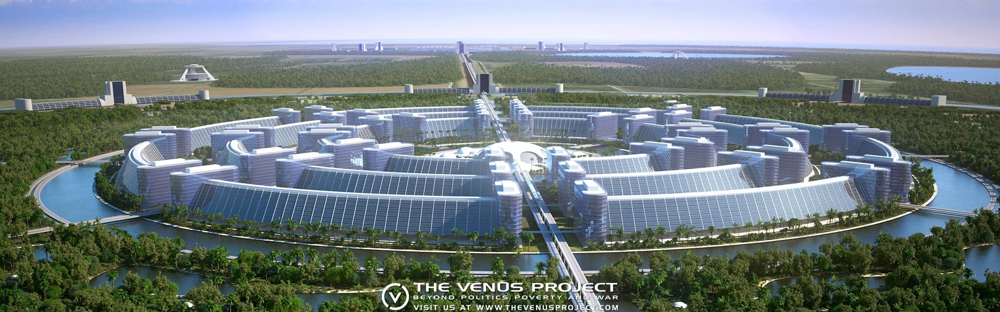
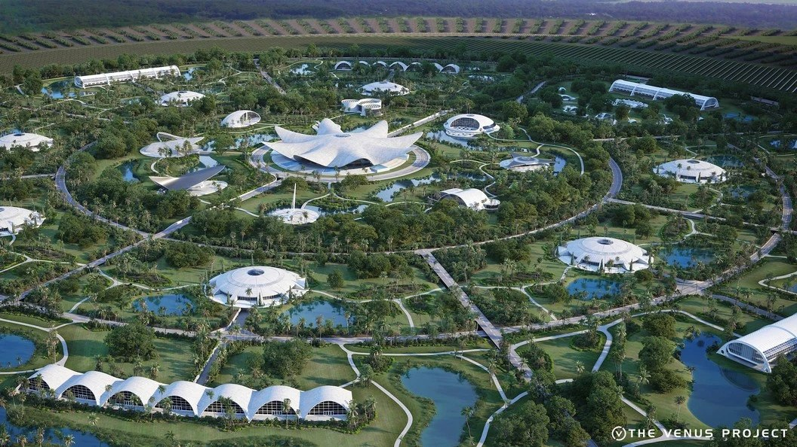
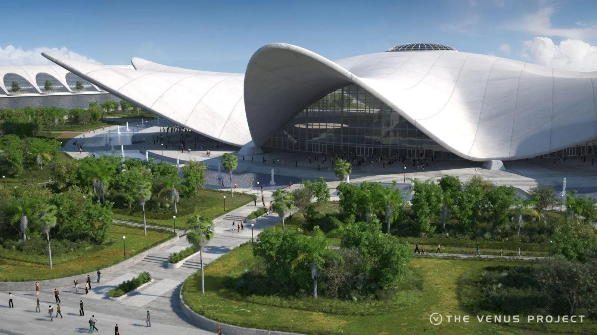
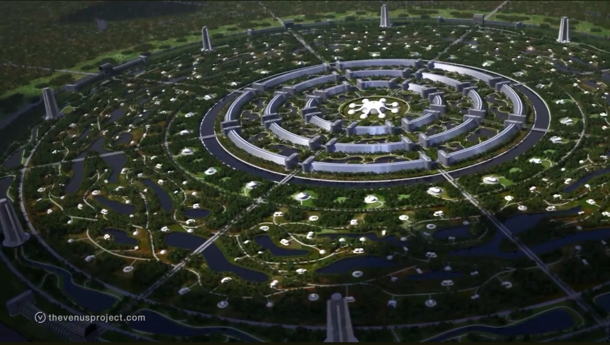
Jacque Fresco’s Venus Project or City-Systems (1985)
The earliest node I came across was The Venus Project by the cybernetician and social engineer (or ‘sociocyberneer’ to use his own portmanteau) Jacque Fresco. Fresco designed futuristic circular cities, composed of a central hub and concentric rings – separating residential, agricultural, and industrial zones. The purpose of these technologically advanced, garden cities would be to ‘act as universities for global resource management… and testing grounds for each future phase of global development’.
In other words, the cities would be the catalyst for the transition to what Fresco called a ‘resource-based economy’ (RBE): a ‘new socio-economic system’ where ‘resources are available without the use of money’. The ultimate ambition of the RBE is that it ‘utilizes the most current technological and scientific advances to eventually provide the highest possible living standard for all people on Earth’.
This economic model developed by Fresco has a series of core characteristics that differentiate it from the current system, namely it is:
- Post-monetary & Post-market: currency is not used to purchase goods and services and trade is not used as an allocation mechanism. Instead they are accessed at no cost through an integrated system of resource-management, production and distribution.
- Post-capitalist: there is no private ownership class that controls materials and infrastructure. Instead it is managed via a participatory economic democracy guided by a scientific, technical assessment of resource utilities and ecological constraints.
- Post-growth: the system does not require perpetual economic expansion to sustain itself and avert collapse. Instead it is steady-state, maintaining a consistent population and productivity.
- Post-scarcity: the system does not manufacture artificial scarcity (high-demand, low-supply) of resources to create economic value. Instead, through efficiency improvements (ephemeralisation) it creates universal abundance.
The Venus Project center in Florida, Fresco’s residence and place of work, was a real-world prototype of his vision for futurist architecture and ecological design. Beyond renderings, the center was a living representation of what could be possible everywhere. Following this, the next stage was to create the first research city, The Center for Resource Management that would ‘act as a stepping stone towards the development of our proposed network of cities’.
For more on Fresco’s RBE and its successor, Joseph’s Integral, check out my other piece: The Design of a (Post-)Transitional World-System: Uniting Schmachtenberger’s New Economics & Joseph’s Integral.
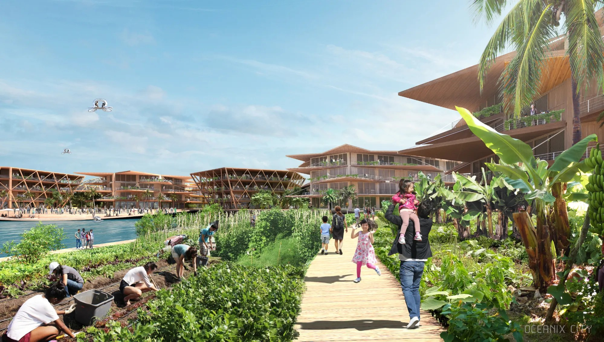
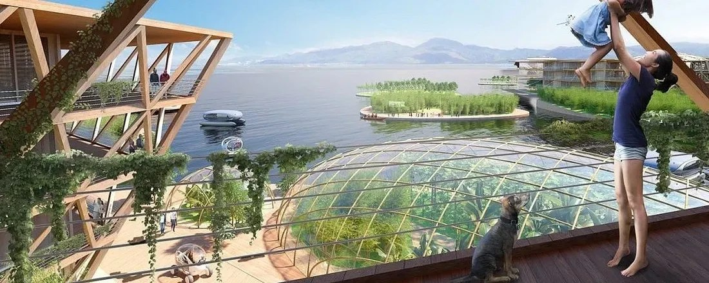
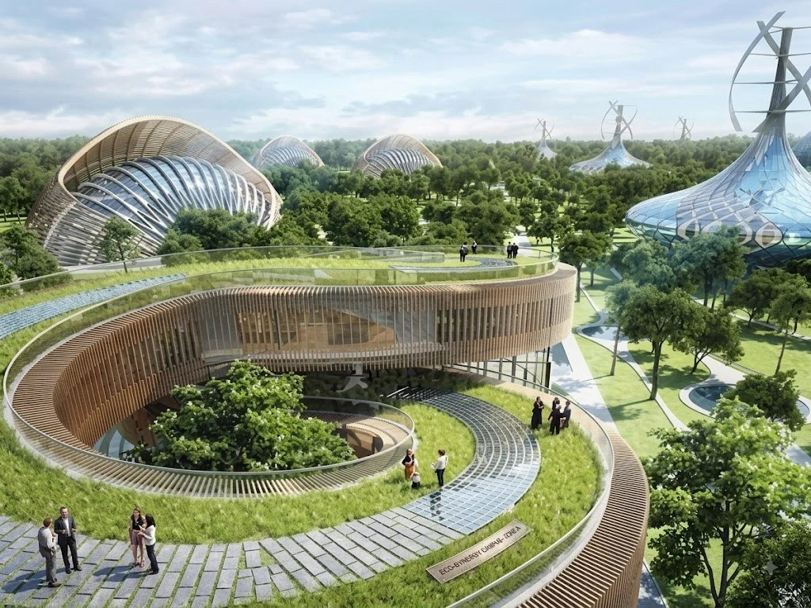
Jordan Hall’s Civium Project (2020)
Between 2020-21, Jordan Hall recorded a series entitled The Civium Project (15 episodes in total), later followed by an essay From City to Civium (2023).
Hall’s Civium Project is based on the premise that the city, as we have known it, is the fundamental organising unit of the type of civilisation (what Hall has called ‘Game A’) that has existed since civilisation began. On this model, surrounding urban and rural areas, built and natural environments, are rendered as supporting infrastructures for the internal complexification and outward expansion of the city as the centre of civilisation.
Alongside this geographical ontology, a supplementary observation from complex systems science – from the book Scale by Geoffrey West (2017) – that Hall draws on is that cities adhere to a law of ‘superlinear scaling’: that is, increases in the population size of a city (input), result in increases in the economic productivity and technological innovation rate of the city that are greater than the increase (i.e. more than linear, hence super-linear). In other words, when the input increases by 100%, doubling in size, these outputs increase by more than 100% (115%). As Hall puts it, ‘this gives rise to a very powerful dynamic… cities are to people like stars are to atoms there’s a desire sometimes a gravitational attractor to pack as many people as possible into the city’.
Given, the capacity and competitiveness of a civilisation is determined by the size of its labour force and army, as well as its tech level, the super-linearly scaling of the city became a military-economic imperative. As well as top-down governance, this also happens from embedded growth obligations (EGOs) and a systemic positive feedback loop where the increasingly growing population of the city requires further increase to sustain itself via greater productivity, innovation. This continues until the city reaches a scale where it can no longer support itself (diminishing returns on growth) resulting in the collapse of the city and the wider civilisation networked around it.
Hall proposes that the underlying driver of superlinear scaling is minds; interacting as part of a collaborative network. Whilst historically this required physical co-location, modern technological civilization enables digital communication and therefore the decoupling of minds (and bodies as substrate) from the city. Centrally, Hall has put it that ‘The Civium says that if we render into the virtual what is best done in the virtual and render into the physical what is best done in the physical we can change the whole game’. The implication is that we can now redesign civilisation oriented not around the imperatives of human capital and infrastructure profusion, but around human sociality (below the Dunbar number), affinity with the natural world and ultimately, flourishing. This would mark a transition From the City to what Hall terms the Civium.
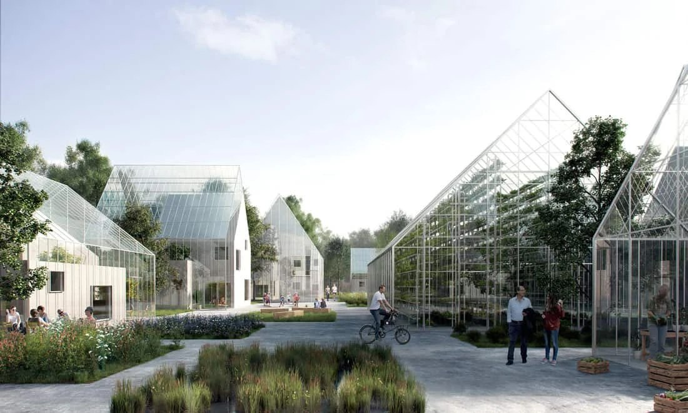
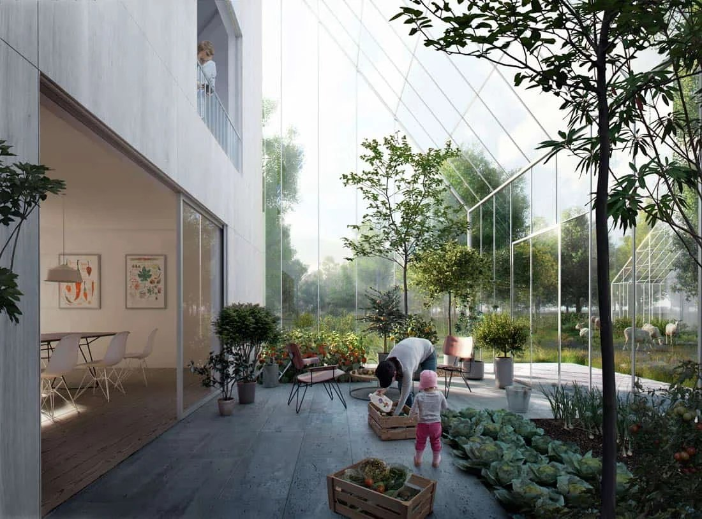
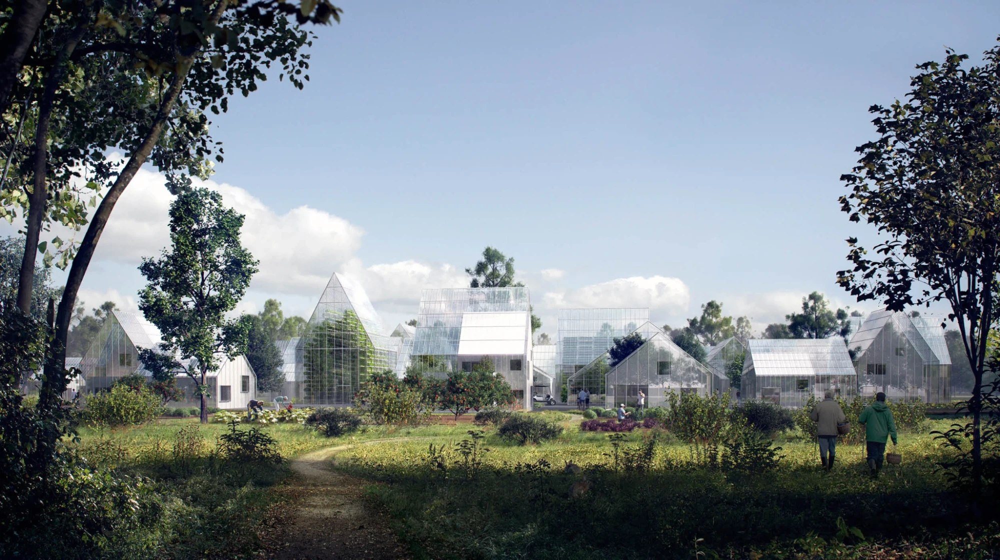
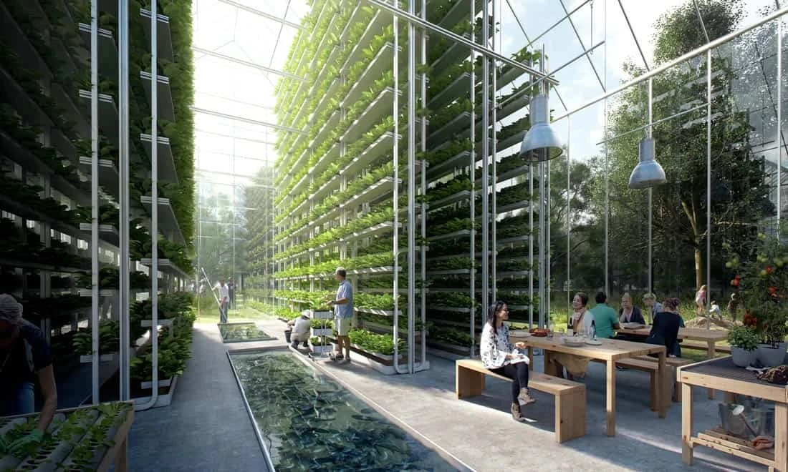
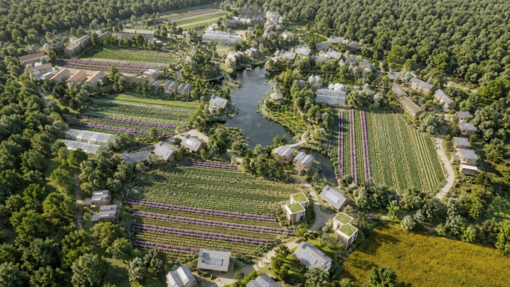
James Ehrlich’s ReGen Villages (2015, 2026+)
ReGen Villages is a design initiative for developing a new form of ecologically sustainable (regenerative), technologically sophisticated urban infrastructure. As it was described in its original UN Brief (2015) RegenVillages – Integrated village designs for thriving regenerative communities:
‘This concept for modern village design is… integrating proven technologies in innovative ways, such as built-environment energy positive dwellings, renewable power and micro-grid distribution, living machines for water and waste management, and organic aquaponic food production at scale, all combined in a total community management system.’
As of 2026 the project has revamped its website around VillageOS, the specially-designed operating system for the ecovillages: ‘Village OS: an open-source, open-science orchestration platform for automating the analysis of land, climate, and resource flows to generate climate-adaptable, resilient land planning scenarios. Aggregating layers of open-source geospatial, terrain and climate data, it then creates inference models for mapping local and regional water, energy, food, waste for resource security and circularity.’
As I see it, Ehrlich’s ReGen is developing the institutional platform and socio-technical capabilities to actually construct Hall’s Civium and Fresco’s RBE.
Link: the Future Thinkers Smart Village (from what I remember) was initially presented as a collaboration with ReGen Villages with James joining Euvie and Mike (the Future Thinkers) to discuss the village. The Future Thinkers was a podcast early in the metacrisis and Game B space that Jordan Hall (Civium) was an influential, founding part of.
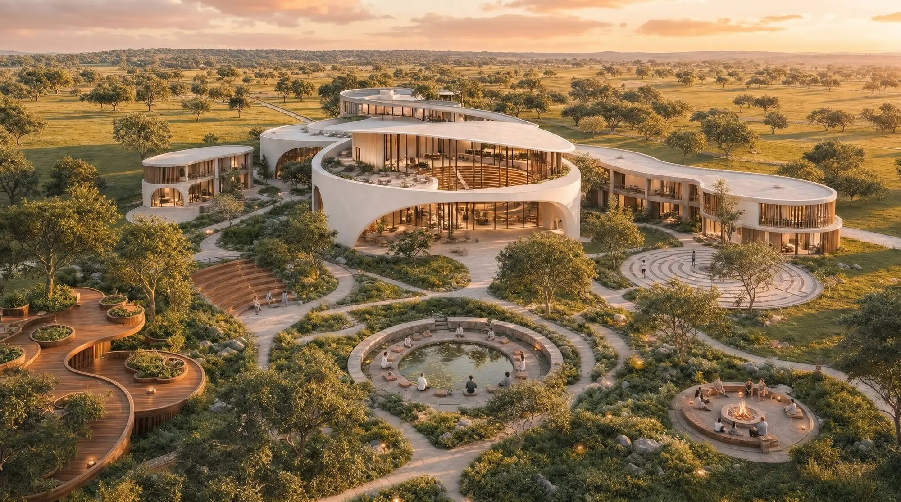
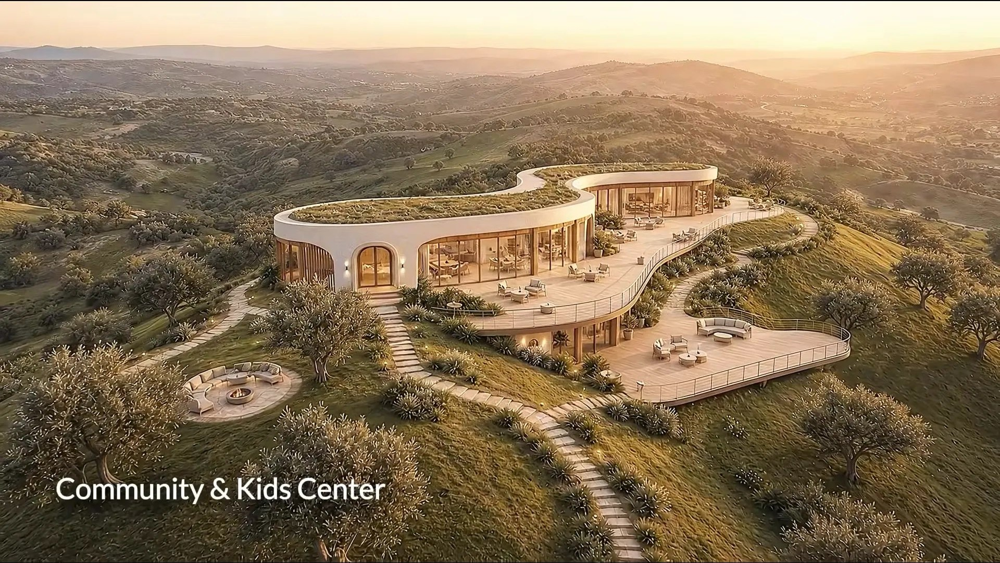
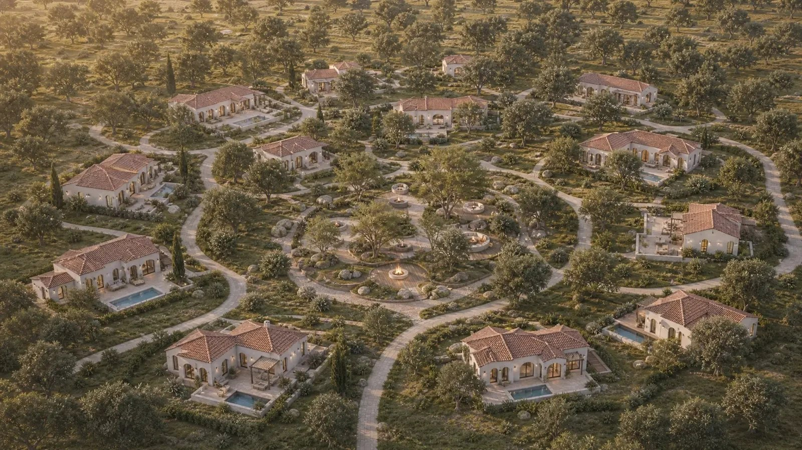
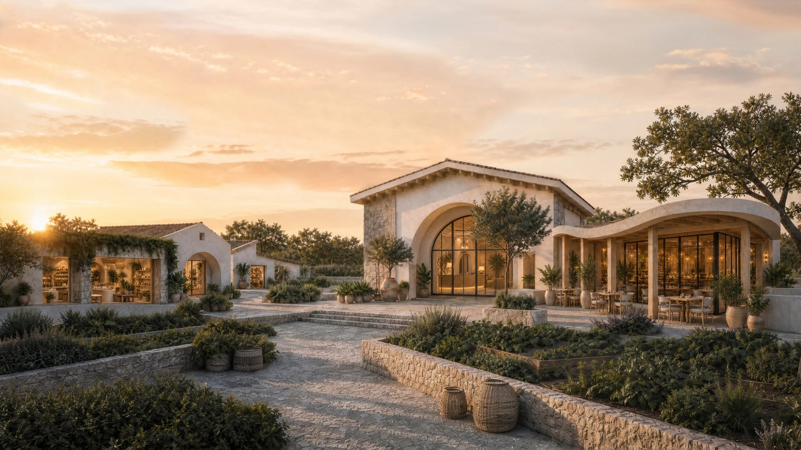
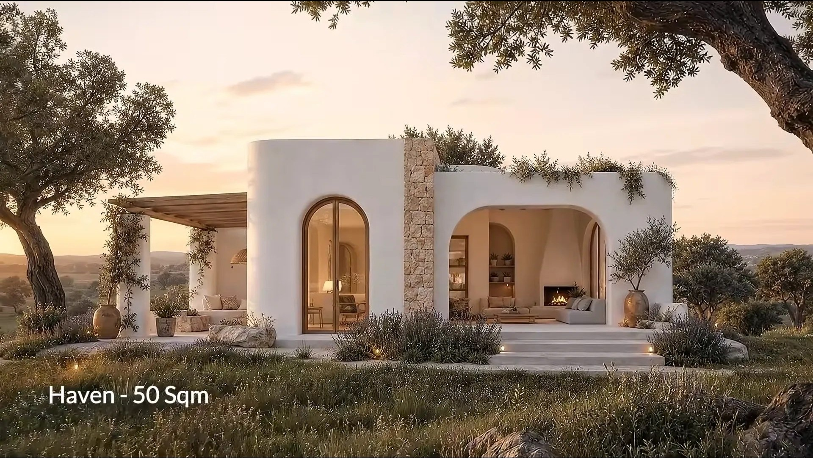
Vincent Daranyi & Karen Aiyana Birch’s Neos Village (2023 - 2028)
Co-founded by Vincent Daranyi and Karen Aiyana Birch, Neos Village is a planned ‘Wellbeing Sanctuary’ in Alentejo, Portugal with the mission ‘to model a new way of being & living’. The project was first conceptualised in 2023, and has a timeline for the first residents to move in at the end of 2028. The ultimate goal is for the village to host 1000 residents across its 1000 acres.
Neos is novel, in comparison to the previous projects documented, insofar as it brings together environmentalism with spiritualism: combining the self-sufficient eco-village with a deliberately developmental space (i.e. a form of modern monastery and therapeutic center).
On the eco-side, the vision for the village reads:
“the blueprint for a self-sufficient sanctuary is taking root—a place where eco-innovation harmonizes with nature’s wisdom. From an organic farm to energy-efficient dwellings, each element is designed to nourish, inspire, and respect the earth. Witness the blossoming of a land destined for healing, and a deep commitment to environmental stewardship.”
On the soul-side, Neos is the home of the Center for a New Humanity and the New Human movement:
“we are gathering the bright souls at the leading edge of knowledge into the dawn of a new humanity and a new earth. Join us for specialist programs and life-changing journeys based in the interconnectivity of deep prophetic wisdom and original revelatory insight into the evolution of the human being currently underway.”
“Wellness is just one piece of the wellbeing picture we are developing at Neos for mind, body, soul and spirit — from trauma and chronic disease healing to city detoxes to rewilding, expanding your consciousness, and reskilling towards your true life purpose.”
Whilst clearly having its own conscious identity, the creators emphasise that ‘Neos is not a hippie commune… and not guru- or dogma-led… Beyond a shared commitment to consciousness and inner work, nothing is prescribed’.
Recently (2026), Neos released an AI-created immersive tour Experience Living at Neos Village which presents the idyllic world of what the village could be in the future. This was preceded by another film of the co-founders capturing The Essence of Neos.
The words of the female co-founder and creative lead resonated with me the most, particularly the recognition that (beyond complex discussions of ‘the metacrisis’) the solution is actually quite simple. We have all the knowledge we need to combine a process of building sustainable external structures with one of cultivating enlightened internal structures:
“There’s a way of life that we could all be living where people feel deep interconnectedness within all of us… We need to just remind each other we are here now to birth a completely different version of this planet. Everybody has something that they’re meant to do. We know what brings us health. We know what brings us vitality. We know how to give back to the earth. We already have all of the answers. Nothing new needed here. We just haven’t brought it all together yet.”
Out of all the projects covered here, Neos appears by far to be the most luxurious in its design and this tracks its expected cost: ‘house prices start at €175,000 and are currently offered at cost’ up to ‘1.5 million’ for the largest units. In my view, these largest houses (displayed in the experience video) too closely resemble the excessive luxury lifestyle of capitalist modernity – which slightly diminishes the guiding ethos of Neos in my eyes. It’s also just an unfortunate reality that for many, particularly young people, such a cost is prohibitive, even if they are, in principle, aligned with the project’s eco-spiritual vision.
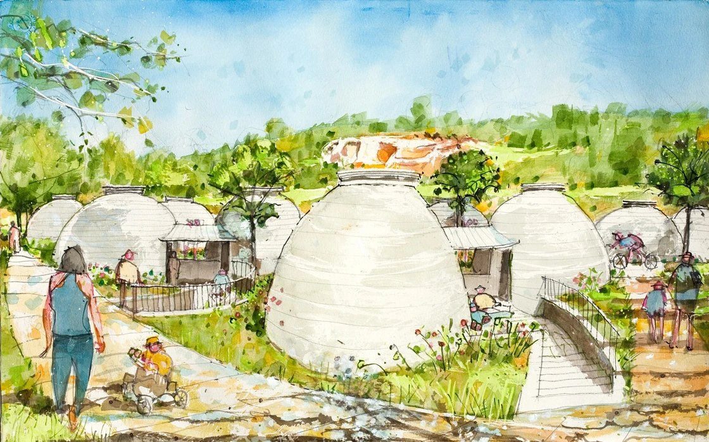
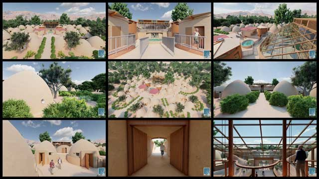
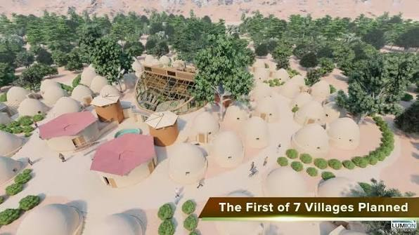
Jae Sabol’s OneCommunityGlobal (2010)
Finally, another notable mention is Jae Sabol’s OneCommunityGlobal, a ‘100%-volunteer’ run initiative creating designs for ecovillages:
‘our mission is to help people create a better world by demonstrating a more sustainable and enriching way of living and open source everything needed for replication… this includes free-shared and “Highest Good” approaches to food, energy, housing, education, for-profit and non-profit economic design, social architecture, fulfilled living, global stewardship practices, and more.’
Like The Venus Project’s theory of change, OneCommunity’s goal was to create the first hub as basis for further ones:
‘Combined, we will use these to build One Community as the first of many teacher/demonstration hubs. These hubs will form a global collaborative to provide even more research, blueprints, and necessary support for successively easier, more affordable, and creative duplication everywhere.’
This is further characterised as a ‘self-replicating sustainability model’ and ‘a duplicable model solution that creates additional solution creating models’. In other words, each village is created with the capacity to create future villages, through further design work, production of materials and the demonstration of a higher quality of life that attracts future residents.
Unlike ReGen and Neos, OneCommunity is defined by an open-source and (insofar as it is possible) non-commercial approach. Like the other projects it has a high cost: ‘One Community is seeking between $20 million to $30 million in grants… for the purchase of land, startup costs, and the first two phases of the construction project for creating the example villages’.
Yellow Teaming: Accounting for Potential Problems
“The ‘yellow team’ concept takes this idea in another direction, assessing a project and its implementation in the context of all other aspects of reality that it will touch over the full course of its lifetime. Where red teaming attempts to assure that a plan doesn’t fail, yellow teaming attempts to ensure it doesn’t cause unexpected harms or problems elsewhere. It aims to account for how our typical approaches to solution design tend to make problems worse in the long run, and provide guidance to address such issues in advance, thereby minimizing the risk of negative externalities.”
— Development in Progress, The Consilience Project (2024)
Socio-Ecological Externalities of System-to-System Transition
The primary problem of infrastructural gaianism is the initial economic costs and negative externalities of transition: building a new decentralised network of high-tech, eco-villages is highly capital-intensive and requires transporting materials via existing, unsustainable global supply chains.
There is hence a time period in which the project as a whole may be harmful to the environment and other populations around the world – though it would eventually become net positive over longer time horizons and ultimately enable a sustainable future for everyone.
Initial Limits to Decentralisation
Another problem is the initial limits of decentralisation: the most advanced medical facilities, specialised manufacturing facilities, geographically-distributed minerals etc. may require interfacing with the market. The first and second may be prohibitively expensive or even proprietary. The third may require a node in the network that has access. In short, there are major bottlenecks, thresholds and degrees to actually developing an independent, self-sufficient civilisation (on Earth, let alone a Mars colony).
Power-Response
If perceived as a threat to the established order of states and markets, communities may experience an immune response and suppressive measures from power. Project Cybersyn in Chile is a case study to point to here. As is the general history of Western imperialism and anti-communism (containment).
The Problem of Parallel Civilisations
It doesn’t ultimately matter if there is a decentralised network of eco-cities – even if half the world transitions to this – if the old civilisation keeps on running and fucks everything up – likely by engaging in power competition with the new civilisation (to the point above).